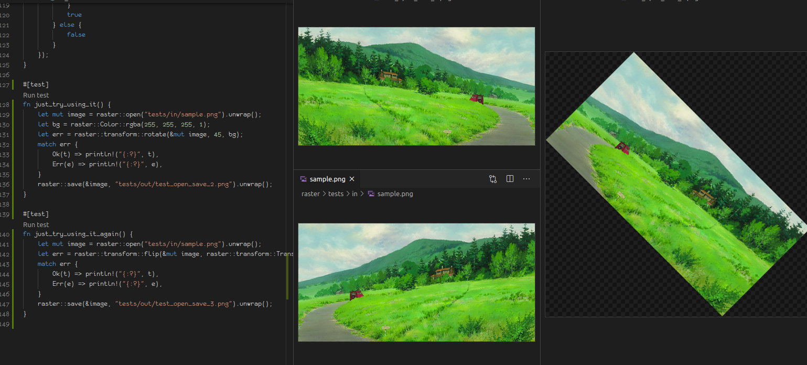

参加了一个写 Rust 领树莓派的活动, 打算用 raster 做个简单的图片处理工具

步骤 1： 在 Node.js 应用中调用 Rust 函数
# Get the code
$ git clone https://github.com/second-state/ssvm-nodejs-starter
$ cd ssvm-nodejs-starter
# Run Docker container
$ docker build -t ssvm-nodejs:v1 .
$ docker run -p 3000:3000 --rm -it -v $(pwd):/app ssvm-nodejs:v1 --env HTTP_PROXY="http://127.0.0.1:1081"
root@40b721eb3a3b:/# cd /app
root@40b721eb3a3b:/app# ssvmup build
执行了很长一段时间
root@40b721eb3a3b:/app# cat $(which ssvmup)
#!/usr/bin/env node
const { run } = require("./binary");
run();
后来发现 binary.js 还要下载（需要科学工具）一个 Rust 写的命令行工具, 用来封装 cargo, 实际上执行的是这个命令：
cargo build --all-targets --release --target wasm32-wasi
完了之后开启服务
╰─# node node/app.js
Server running at http://0.0.0.0:3000/
验证：
$ curl http://localhost:3000/?name=SSVM
hello SSVM
将 src/lib.rs 改了改
use wasm_bindgen::prelude::*;
#[wasm_bindgen]
pub fn say(s: &str) -> String {
println!("The Rust function say() received {}", s);
let r = String::from("What's up ");
return r + s + "?";
}
然后 ssvmup build && node node/app.js
➜ ~ curl http://localhost:3000/\?name\=SSVM
What's up SSVM ?
这里有很多细节, 都写在另一个 github 仓库, 折腾了一番 html/js, 最后用 docker 把服务搭了上去
最后拿了个树莓派 Zero.